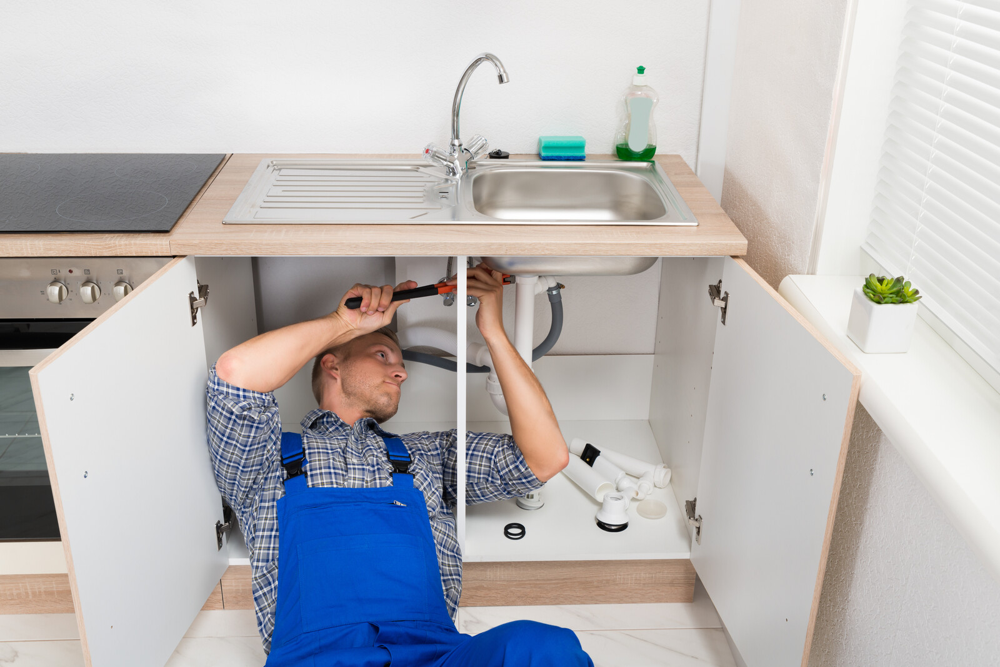

Een lekkage, gevonden zonder hakwerk
In het Centrum lekken vaak nog loden leidingen en oude soldeerverbindingen. In het Waterkwartier speelt grondwater mee, in Leesten zit het lek vaak bij de verdeler van de vloerverwarming. Wij zoeken gericht en repareren alleen waar het nodig is.
Voor uw verzekeraar krijgt u een rapport met foto's en meetgegevens.